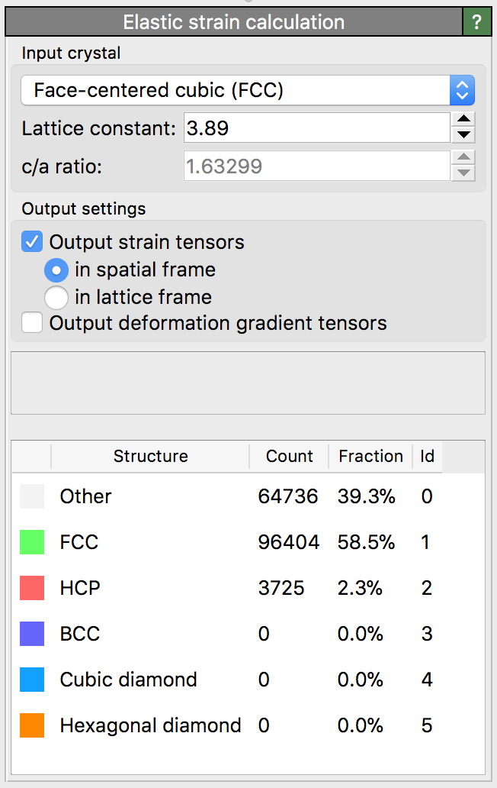

Elastic strain calculation
{kind=link}
This modifier computes the atomic-level elastic strain and deformation gradient tensors in crystalline systems. It can be used to analyze elastic distortions in a crystal lattice. Furthermore, it allows to determine the local crystal orientation in polycrystalline systems.
Elastic lattice strain distribution around a prismatic dislocation dipole in CdTe computed with the modifier.
The elastic deformation gradient tensor, \(\mathbf{F}^e\), is related to the gradient of the elastic displacements, i.e. \(\mathbf{F}^e = \nabla \mathbf{u}^e + \mathbf{I}\). It transforms vectors from an imaginary, ideal, strain-free and stress-free crystal state to the physical configuration of the crystal (i.e. the simulation snapshot to be analyzed) in the following way:
\(\Delta \mathbf{x} = \mathbf{F}^e \cdot \Delta \mathbf{X}\)
Here, \(\Delta \mathbf{X}\) is a (column) vector in the ideal crystal lattice (sometimes called the material frame) and \(\Delta \mathbf{x}\) is the corresponding vector in the elastically strained crystal (the spatial frame). The vector \(\Delta \mathbf{X}\) is expressed in the coordinate system aligned with the lattice Bravais cell, whereas \(\Delta \mathbf{x}\) is given in the global simulation coordinate system. Thus, the transformation tensor \(\mathbf{F}^e\) carries information about the crystal orientation in addition to the elastic stretch deformation.
In fact, the elastic deformation gradient tensor can be thought of as being composed of two parts, \(\mathbf{F}^e = \mathbf{R} \cdot \mathbf{U}^e\), where \(\mathbf{R}\) is an orthogonal rotation-reflection matrix that describes the local lattice orientation within the simulation coordinate system and \(\mathbf{U}^e\) is a positive definite stretch tensor that describes the elastic distortion of the crystal. Note, however, that in the current program version only \(\mathbf{F}^e\) is computed, not its polar decomposition into \(\mathbf{R}\) and \(\mathbf{U}^e\). That is something you currently have to do outside of OVITO if you need it.
Note that OVITO also provides the Atomic strain modifier, which determines the total deformation at each atom from the relative displacements of its neighbors. Computing the total displacements (which don’t have to be purely elastic) requires two simulation snapshots of the system: the reference configuration, which specifies the initial atomic coordinates, and the deformed configuration. The elastic strain calculation, in contrast, does not require an explicit reference configuration. The user only has to specify the ideal unit cell of the crystal, which serves as the basis for constructing an ad hoc reference configuration locally at each atomic site. The elastic lattice deformation is computed by comparing the current atomic positions to this virtual reference structure.
OVITO computes the tensor \(\mathbf{F}^e\) locally at each atom in the system by taking into account the positions of atoms in the local neighborhood. How many neighbors are taken into account depends on the selected crystal type. For close-packed structures (FCC, HCP) only the 12 nearest neighbors of a central atom are used to compute the elastic deformation gradient tensor at that central atom. For other crystal structures, neighbors up to the second neighbor shell are taken into account. Note that \(\mathbf{F}^e\) is computed in a least-squares sense, because the elastic deformation in the local neighborhood of an atom may in general be non-affine (inhomogeneous).
The atomic-level elastic deformation gradient tensor can only be computed for atoms for which the local mapping of their neighbors to the ideal crystal lattice is determinable. In practice this is only the case for atoms that are located in a structural environment that resembles the perfect crystal sufficiently well. OVITO identifies such atoms in an internal preprocessing step using the common neighbor analysis method (see the Common neighbor analysis and Identify diamond structure modifiers for more information). \(\mathbf{F}^e\) will only be calculated for atoms that have been successfully identified as crystalline atoms. Atoms in highly distorted environments, in contrast, for example in crystal defects such as surfaces or general grain boundaries, are excluded from the computation. The algorithm will assign a null tensor to these atoms, for which the local elastic deformation is undefined.
Atoms that are part of stacking fault and coherent twin boundary defects are treated specially. Here, \(\mathbf{F}^e\) is computed even though the local atomic structure deviates far from the perfect lattice structure. Basically, the calculation method implemented in OVITO performs a decomposition into plastic and elastic deformation in these defects and outputs the elastic component. More information on this topic can be found in the paper
Attention must be paid to the symmetries of the crystal structure. For example, in crystals with cubic symmetry there are 48 equivalent lattice orientations, which will lead to different values of the elastic deformation gradient tensor. Given this fundamental ambiguity, which arises from the crystal symmetry, the algorithm will arbitrarily choose one orientation at random for each crystallite (i.e. grain) in the system. In particular, there is no guarantee that the same orientation will be picked when performing the analysis on different simulation timesteps.
Based on the computed per-atom deformation gradient tensor \(\mathbf{F}^e\), a corresponding elastic strain tensor can be calculated by the analysis modifier. Two options are available:
- Strain tensor in spatial frame
In this case the elastic Eulerian-Almansi finite strain tensor is computed as
\(\mathbf{e} = 1/2 (\mathbf{I} - (\mathbf{F}^e)^{-\mathrm{T}} (\mathbf{F}^e)^{-1})\).
This symmetric strain tensor describes the local elastic deformation in the simulation coordinate system. For example, the component \(\mathbf{e}_\mathrm{xx}\) describes the axial strain along the X-axis of the simulation coordinate system. This strain tensor has the advantage that it is not affected by the lattice symmetry ambiguity problem described above.
- Strain tensor in lattice frame
In this case the elastic Green-Lagrangian strain tensor is computed as
\(\mathbf{E} = 1/2 ((\mathbf{F}^e)^{\mathrm{T}} \mathbf{F}^e - \mathbf{I})\).
This symmetric strain tensor describes the elastic deformation in the local lattice coordinate frame. For example, in a cubic crystal the component \(\mathbf{E}_\mathrm{xx}\) describes the axial strain along the [100] lattice direction of the crystal. However, it is not clear what the local [100] direction is, because in cubic crystals the [100], [010], and [001] lattice directions are interchangeable. This strain tensor is therefore affected by the symmetry ambiguity problem described above.
See also
ovito.modifiers.ElasticStrainModifier (Python API)